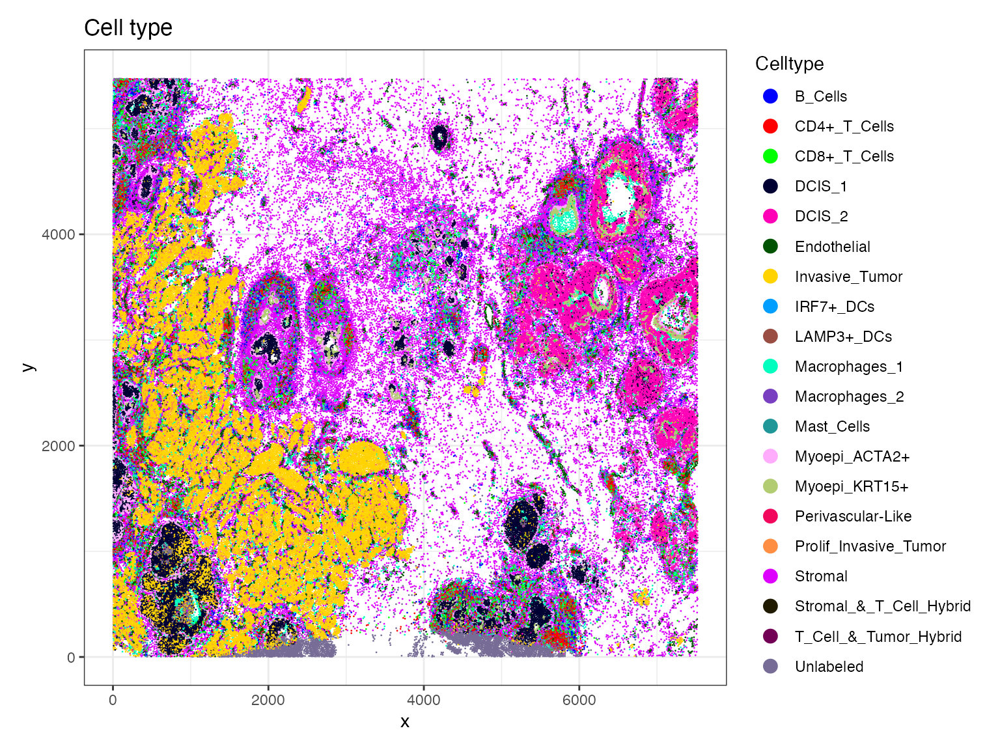
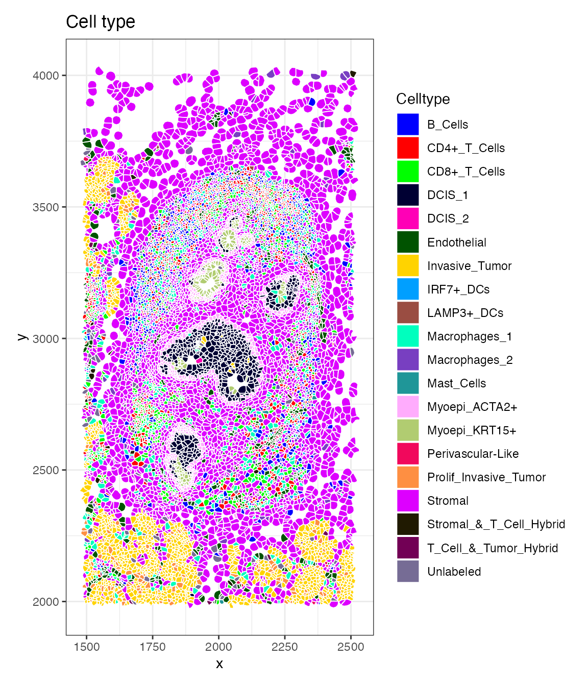
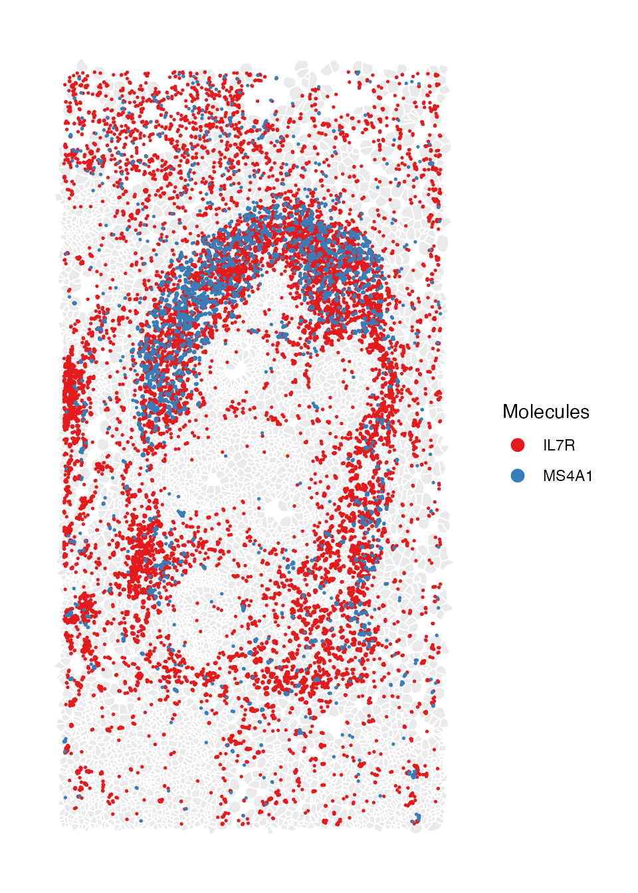
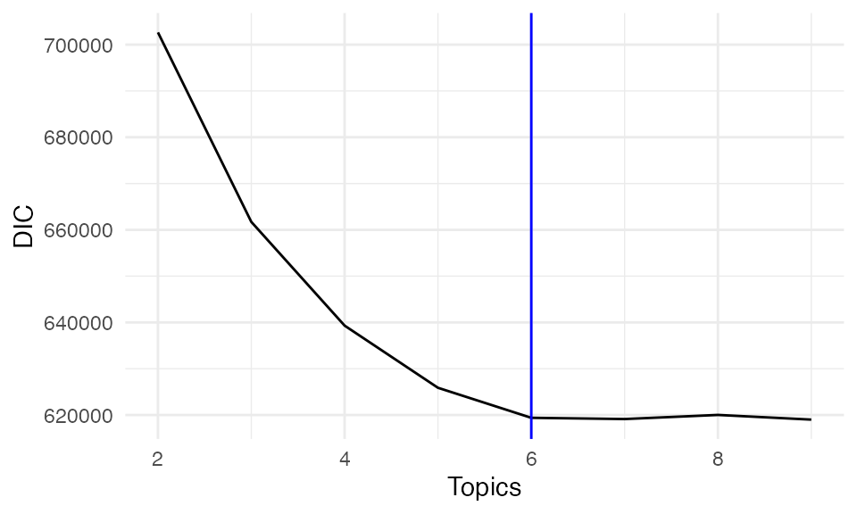
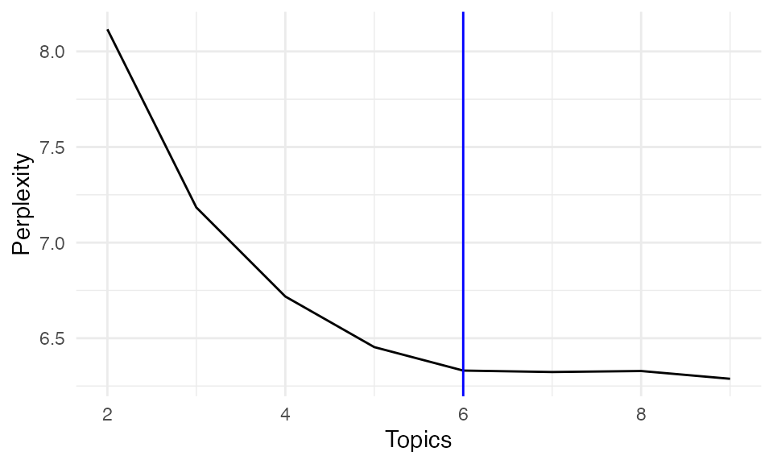
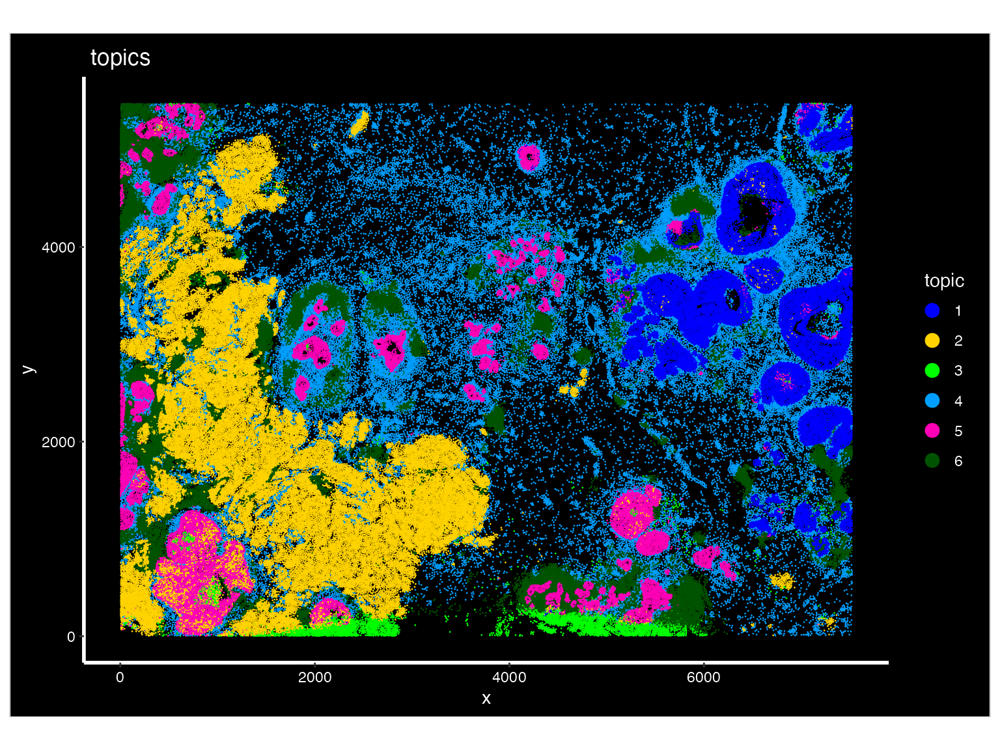
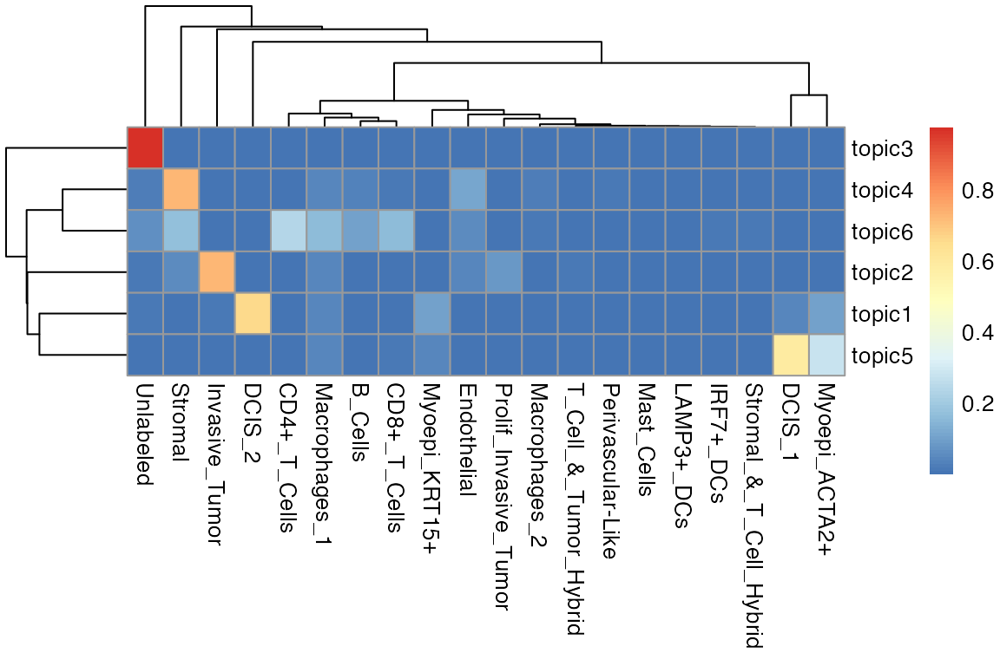

Breast cancer 10x Xenium data analysis
Nikki Xiao
2026-01-30
Source:vignettes/articles/Xenium_Example.Rmd
Xenium_Example.RmdYou can jump to SpaTopic section to skip the data preprocessing.
Set up
We use Seurat package and ggplot2 to visualize the results. For large datasets, we also increase the global memory limit to avoid errors.
We use a 10x Genomics Xenium breast cancer dataset to illustrate how
to use SpaTopic. The data object here can be download from
here,
with original public resources available on the 10x
Genomics website. We use the Seurat function
ReadXenium() to load both centroid and
segmentation spatial information from Xenium in-situ
data, which will later be used for spatial visualization and topic
inference.
#### Sample 1 ####
path <- "/Users/nikkixiaomengqi/Documents/research/outs/"
breastCa.Rep1 <- ReadXenium(
data.dir = path,
type = c("centroids", "segmentations"),
)We build spatial coordinate objects using both cell centroids and
segmentation boundaries provided by the Xenium output. Centroids
represent the cell locations, and segmentation boundaries capture
detailed cell shapes. These spatial components are combined into a
single Field of View (FOV) object using
CreateFOV() function, ensures that gene expression, cell
identity, and spatial coordinates are consistently aligned within the
Seurat object.
We then create a Seurat object using the Xenium gene expression matrix. In addition to the gene expression assay, we also store blank codewords and negative controls as separate assays.
assay <- "Xenium"
segmentations.data <- list(
"centroids" = CreateCentroids(breastCa.Rep1$centroids),
"segmentation" = CreateSegmentation(breastCa.Rep1$segmentations)
)
coords <- CreateFOV(
coords = segmentations.data,
type = c("segmentation", "centroids"),
molecules = breastCa.Rep1$microns,
assay = assay
)
breastCa.Rep1.obj <- CreateSeuratObject(counts = breastCa.Rep1$matrix[["Gene Expression"]], assay = assay)
breastCa.Rep1.obj[["BlankCodeword"]] <- CreateAssayObject(counts = breastCa.Rep1$matrix[["Blank Codeword"]])
breastCa.Rep1.obj[["ControlCodeword"]] <- CreateAssayObject(counts = breastCa.Rep1$matrix[["Negative Control Codeword"]])
breastCa.Rep1.obj[["ControlProbe"]] <- CreateAssayObject(counts = breastCa.Rep1$matrix[["Negative Control Probe"]])
## We add the spatial coordinate information to the Seurat object under the corresponding FOV for later spatial visualization.
fov <- "Rep1"
breastCa.Rep1.obj[[fov]] <- coordsWe load cell type annotations for this dataset from a previously curated reference and loaded here for visualization and interpretation. You can download the file from here.
## cell type
anno.R1<-read.csv(file = "/Users/nikkixiaomengqi/Documents/research/GSM7780153_Xenium_R1_Fig1-5_supervised.csv")
breastCa.Rep1.obj[["Celltype"]]<-anno.R1$ClusterLoad the file below to skip the data preparation steps above.
load(file = "/Users/nikkixiaomengqi/Documents/research/breastCa.Rep1.obj.Rdata")We first visualize the spatial distribution of annotated cell types
using ImageDimPlot(). This provides an overview of tissue
organization, and generates a baseline for comparison with
SpaTopic-derived spatial topics. In this plot, each point represents a
cell, colored by its annotated cell type, overlaid on the spatial
coordinates of the tissue section.
breastCa.Rep1.obj$Celltype<-as.factor(breastCa.Rep1.obj$Celltype)
celltype.plot <-ImageDimPlot(breastCa.Rep1.obj, group.by = "Celltype", fov = "Rep1", axes = TRUE, cols = "glasbey",dark.background = F,flip_xy = FALSE)+ ggtitle("Cell type")+theme_bw()
celltype.plot
Zoom in
We need to redefine the crop function because the Crop()
function behaves as if the x and y coordinates are swapped. To be
consistent, we define a small wrapper function that internally switches
the x and y inputs.
### Redefine the crop function
### x and y seems be swapped in this function x = y, y = x
### need switch x and y to be consistent
#tumor.crop <- Crop(breastCa.Rep1.obj[["Rep1"]], x = c(2000,4000), y = c(1000,2000))
Crop_custom<-function(objects,x, y){
Crop(objects, x = y, y = x)
}We then use this function to define multiple zoomed-in regions from the original image, and then store them as a new FOV within the Seurat object, uses cell segmentation boundaries for visualization.
library(SeuratObject)
breastCa.Rep1.obj <- UpdateSeuratObject(breastCa.Rep1.obj)
tumor.crop<-Crop_custom(breastCa.Rep1.obj[["Rep1"]], x = c(1000,2000), y = c(2000,4000))
breastCa.Rep1.obj[["zoom2"]] <- tumor.crop
DefaultBoundary(breastCa.Rep1.obj[["zoom2"]]) <- "segmentation"
LN.crop<-Crop_custom(breastCa.Rep1.obj[["Rep1"]], x = c(1500,2500), y = c(2000,4000))
breastCa.Rep1.obj[["zoom1"]] <- LN.crop
DefaultBoundary(breastCa.Rep1.obj[["zoom1"]]) <- "segmentation"Now we visualize the spatial distribution of annotated cell types
within the zoom-in region using the function ImageDimPlot.
This plot shows the spatial patterns that are difficult to observe at
the full-image scale.
celltype_distribution.plot <- ImageDimPlot(breastCa.Rep1.obj, group.by = "Celltype", fov = "zoom1", axes = TRUE, cols = "glasbey", dark.background = F,flip_xy = FALSE)+ ggtitle("Cell type")+theme_bw()
celltype_distribution.plot
Also the molecule coordinates for selected marker genes within the same zoomed region.
molecule_coord.plot <- ImageDimPlot(breastCa.Rep1.obj, fov = "zoom1", group.by = NA,molecules = c("IL7R", "MS4A1"),dark.background = F, nmols = 20000, alpha = 0.1,mols.size = 0.3,mols.alpha = 1,axes = FALSE,flip_xy = FALSE)
molecule_coord.plot
You can also download the updated object here and load it to skip these preprocessing steps.
save(breastCa.Rep1.obj, file = "breastCa.Rep1.obj.Rdata")SpaTopic
In this section, we apply SpaTopic to the Xenium breast cancer spatial transcriptomics dataset to infer spatial topics that capture recurrent cellular neighborhood patterns. The data object here can be download from here. We load the preprocessed Seurat object that contains cell segmentation, cell-type annotations, and spatial coordinates, you can download the file from here.This object will be our input for SpaTopic analysis.
load(file = "/Users/nikkixiaomengqi/Documents/research/breastCa.Rep1.obj.Rdata")We first convert the Seurat object into a SpaTopic compatible dataset
using the function Seurat5obj_to_SpaTopic(). We specifies
celltypes, which will be used to define cellular categories. The
resulting dataset contains the spatial coordinates and
cell-type labels required for SpaTopic modeling.
library(SpaTopic)
dataset<-Seurat5obj_to_SpaTopic(object = breastCa.Rep1.obj, group.by = "Celltype",image = "Rep1")
head(dataset)
#> image X Y type
#> 1 Rep1 847.2599 326.1914 DCIS_1
#> 2 Rep1 826.3420 328.0318 DCIS_1
#> 3 Rep1 848.7669 331.7432 Unlabeled
#> 4 Rep1 824.2284 334.2526 Invasive_Tumor
#> 5 Rep1 841.3575 332.2425 DCIS_1
#> 6 Rep1 848.0222 336.5740 UnlabeledThen we will use DIC to select number of spatial topics. We fit SpaTopic model under different number of topics (K = 2 to 9 in this case), each collecting 100 posterior samples after 2000 burnin iterations.
result<-list()
for (topic in 2:9) {
cat("Running SpaTopic with K =", topic, "\n")
res<-SpaTopic_inference(dataset, ntopics = topic, sigma = 50, region_radius = 400, trace = TRUE, thin = 20, burnin = 2000, niter = 100)
result[[topic]]<- res
}
#> Running SpaTopic with K = 2
#> Running SpaTopic with K = 3
#> Running SpaTopic with K = 4
#> Running SpaTopic with K = 5
#> Running SpaTopic with K = 6
#> Running SpaTopic with K = 7
#> Running SpaTopic with K = 8
#> Running SpaTopic with K = 9Here, we plot DIC for each selected number of topics.
DICs <- unlist(lapply(result, function(x) x$DIC))
DIC_df <- data.frame(
Topics = 2:9,
DIC = DICs
)
ggplot(DIC_df, aes(x = Topics, y = DIC))+ geom_line()+theme_minimal()+geom_vline(xintercept = 6, color = "blue")
In addition to DIC, we assess model performance using perplexity, which measures how well the model predicts the observed data. Lower perplexity indicates better predictive performance.
Perplexity <- unlist(lapply(result, function(x) x$Perplexity))
perx_df <- data.frame(
Topics = 2:9,
Perplexity = Perplexity
)
ggplot(perx_df, aes(x = Topics, y = Perplexity))+ geom_line()+theme_minimal()+geom_vline(xintercept = 6, color = "blue")
Both DIC and perplexity suggest selecting K = 6 as the optimal number of topics, balancing model complexity and interpretability.
We then apply SpaTopic to infer spatial topics across the tissue
using SpaTopic_inference(). Each topic represents a
recurring spatial pattern of cell-type composition.
spatopic.res<-SpaTopic_inference(dataset, ntopics = 6, sigma = 10, region_radius = 80)
save(spatopic.res,file = "sample1.spatopic_result_topics6.rdata")
load(file = "/Users/nikkixiaomengqi/Documents/research/sample1.spatopic_result_topics6.rdata")We store the inferred topic labels back onto the original Seurat
object to visualize SpaTopic results in the spatial context, each cell
is now assigned a topic label. Finally, we visualize the inferred
spatial topics across the tissue using ImageDimPlot. The
plot shows spatially coherent regions corresponding to each topics.
breastCa.Rep1.obj$topic<-factor(spatopic.res$cell_topics)
palatte<- c("#0000FFFF","#FFD300FF","#00FF00FF","#009FFFFF","#ff00b7fa","#005300FF","#FF0000FF")
topic.plot <-ImageDimPlot(breastCa.Rep1.obj, group.by = "topic",fov = "Rep1", axes = TRUE, cols = palatte, dark.background = T,flip_xy = FALSE)+ ggtitle("topics")
topic.plot
We also visualize the results as a heatmap, showing the distribution of the cell-type composition of each distinct topic.
library(pheatmap)
m <- as.data.frame(spatopic.res$Beta)
heatmap.plot <- pheatmap::pheatmap(t(m))